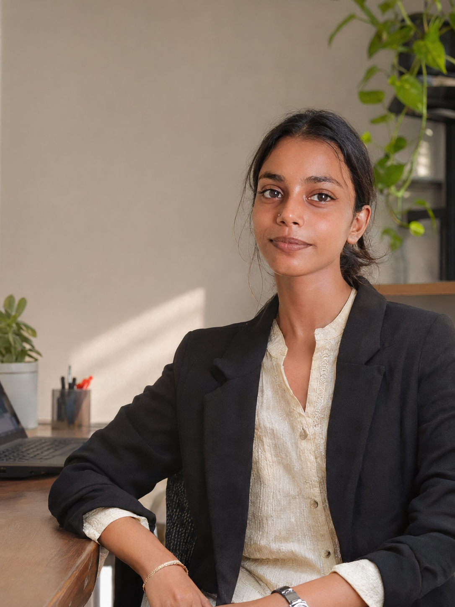
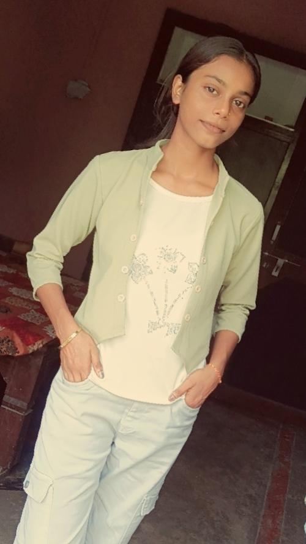
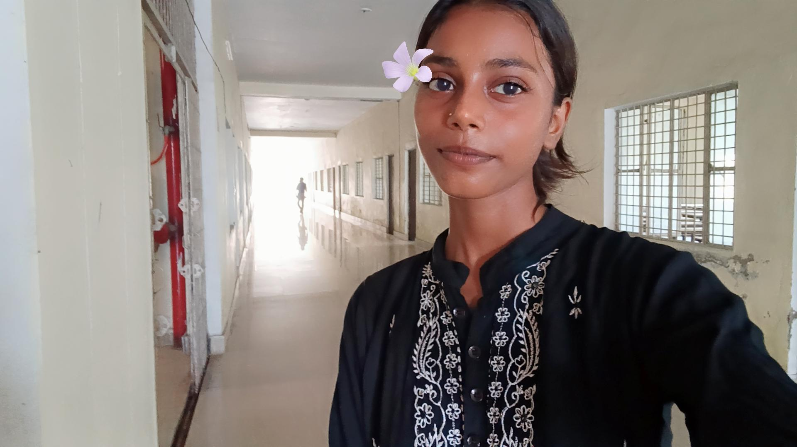

Interfaces that breathe.
HTML, CSS, JavaScript, responsive design and React.
Prayagraj, India · BCA Scholar
I’m Shruti Gupta — a curious web developer turning ideas, code and careful details into digital experiences people feel.

I don’t make pages to fill a screen. I make them to hold an idea, create a feeling ✦ and start a conversation.
More than a screen
The best work comes from being endlessly curious, staying grounded and always trying the next thing.



Current toolkit
HTML, CSS, JavaScript, responsive design and React.
Python, SQL / MySQL and foundational PHP.
Creative problem solving, communication and a user-first eye.
React, Node.js and stronger UI/UX thinking every day.
The timeline
High School at Lalchandra Jasra — the first milestone and a lifelong reason to keep aiming higher.
Intermediate with PCM and Computer Science at GGIC Jasra, adding structure to curiosity.
BCA at Rajju Bhaiya University plus NIELIT O Level — shaping a path into full-stack development.
The next chapter / yours + mine?
I’m open to collaborations, fresh ideas and opportunities to learn by doing meaningful work.
Start a conversation ↗